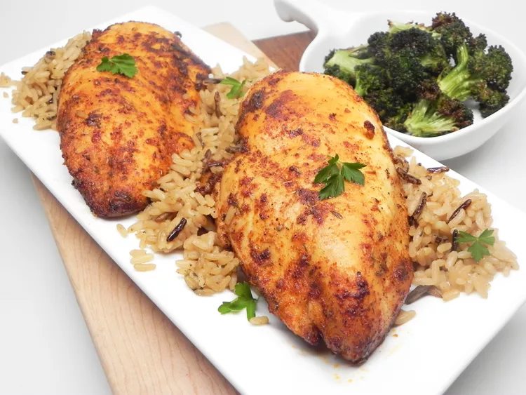

Blackened Chicken Breasts

Air Fryed Blackened Chicken Breasts
Blackened is the end! And so are these chicken breasts halves.
The spices in this recipe will add just a bit of darkness and spicyness to the chicken while not being anywhere near too overwhelming,
adding a bit of heat to your daily protein intake goals!
Ingredients
- 2 teaspoons paprika
- 1 teaspoon ground thyme
- 1 teaspoon cumin
- 1/2 teaspoon cayenne pepper
- 1/2 teaspoon onion powder
- 1/2 teaspoon black pepper
- 1/4 teaspoon salt
- 2 teaspoons vegetable oil
- 2(6 ounce) skinless,boneless chicken breast halves
Steps
- Mix paprika, thyme, cumin, cayenne, onion powder,
black pepper, and salt in a bowl; transfer to a large plate.
- Preheat the air fryer to 360 degrees F(175 degrees C)
- Rub oil over each chicken breast until fully coated, then press into spice mixture
until all sides are coated. Let sit for 5 minutes while the aire fryer preheats.
Place into the air fryer basket.
- Air-fry chicken until no longer pink in the center and the juices run clear, about
20 minutes, flipping halfway through. An instant-read thermometer inserted into the
center should read at least 165 degrees F(74 degrees C)
- Transfer chicken to a plate and let rest for 5 minutes before serving.
Home